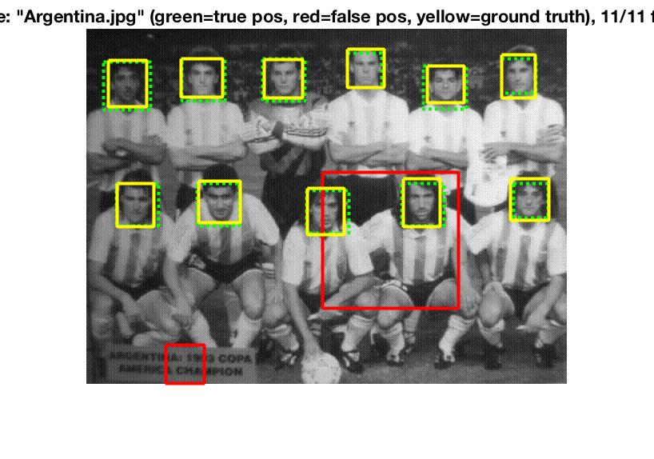
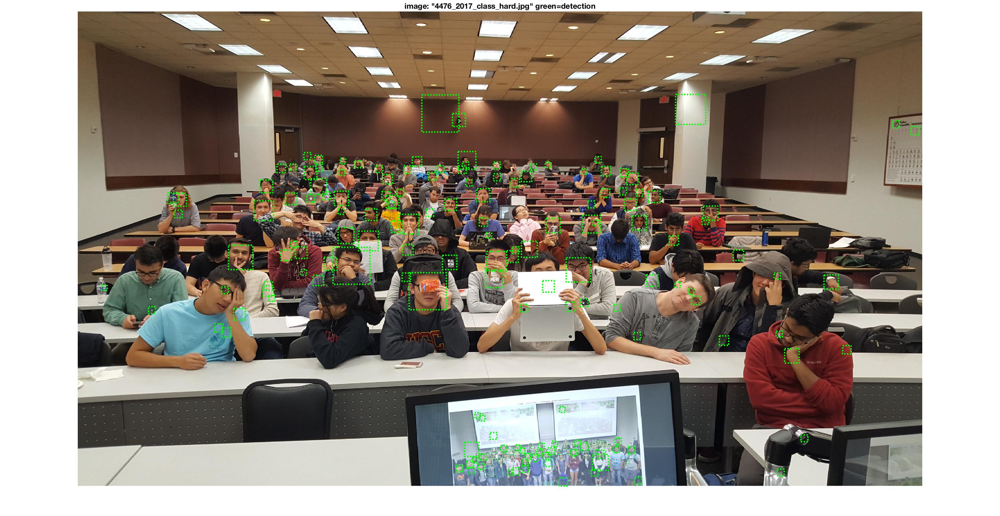

Project 5 / Face Detection with a Sliding Window
Goal
Implement a sliding window detector to detect faces in images. There are four major parts:
- Get positive features
- Get random negative features
- Train a linear classifier
- Run the classifier on the test set
Get positive features
For each 36x36 image on the training dataset, we obtain its positive training face by converting it to a SIFT-like Histogram of Gradients feature with vl_hog() function.
Get random negative features
Similar to getting positive features, we get random negative features using vl_hog() function. But we randomly sample examples from scenes which contain no faces and then convert them to HoG features.
We can modify cell size (the number of pixels in each HoG cell) to improve the performance. Smaller HoG cell size means larger feature dimension and which can work better but slower. And template size should be evenly divisible by cell size.
| Cell size = 6 | Cell size = 3 |
|---|---|
Train a linear classifier
After getting positive and negative examples, we train them using vl_trainsvm() function. And get w and b from this linear SVM classifier.
X = [features_pos; features_neg];
Y = [ones(size(features_pos, 1), 1); -ones(size(features_neg, 1), 1)];
lambda = 0.0001;
[w, b] = vl_svmtrain(X', Y', lambda);
Run the classifier on the test set
For each image on the test set, creating sliding window and run the classifier at multiple scales. We first convert each image to a HoG feature and then step over the HoG cells within a certain window (bounding box), and classify them (confidence is above the threshold or not). Downscaling each image and repeat converting and classifying several times to guarantee any size of face can be detected. Finally, applying non-maximum suppression to remove repeated boxes.
| Cell size | 6 | 3 |
|---|---|---|
| Iterations | 30 | 30 |
| Scale factor | 0.9 | 0.9 |
| Threshold | 0.1 | 0.1 |
| Average precision | ||
| Recall | ||
| Result image 1 | ||
| Result image 2 | ||
| Result image 3 |  |
We can see from the table above that smaller HoG cell size did work better. Even though some faces still can not be well detected, the average precision is improved from 88.6% to 91.9%.
Extra credit: hard negative features
I also pick up 10000 HoG features from "no faces scenes" when their confidences are above the threshold (which are classified as "faces", but actually they are not) and add them to negative features. Then retrain them to get a new linear SVM classifier. And use the new classifier to detect faces.
| Cell size | 6 | 6 |
|---|---|---|
| Iterations | 30 | 30 |
| Scale factor | 0.9 | 0.9 |
| Threshold | 0.1 | 0.1 |
| Average precision | ||
| Recall | ||
| Result image |  |
We can see that the average precision is not improved after adding hard negative features, which may because that hard negative features in the training images may not very similar to the hard negative features in the testing images. But it did reduce the "red" boxes a lot, which means that can improve the ratio of correct detection with same threshold.
Extra credit: interesting positive features
I also add some interesting features to positive set. I first flip each image and obtain their HoG features, and since some faces in testing images are not fully shown (covered by something or people turn their head a little bit), I cover each image's left/right/top/bottom side with black pixels separately and then add their HoG features into positive set.
for i = 1 : num_images
f = image_files(i);
IM = single(imread(fullfile(f.folder, f.name)));
HOG = vl_hog(IM, feature_params.hog_cell_size);
features_pos(i, :) = reshape(HOG, 1, D);
% mirroring
IM2 = fliplr(IM);
HOG = vl_hog(IM2, feature_params.hog_cell_size);
features_pos(i+num_images, :) = reshape(HOG, 1, D);
% 3/4 face (right side)
quarter_width = round(size(IM2, 2) / 4);
IM2 = IM;
IM2(:, 1:quarter_width) = 0;
HOG = vl_hog(IM2, feature_params.hog_cell_size);
features_pos(i+num_images*2, :) = reshape(HOG, 1, D);
% 3/4 face (left side)
IM2 = IM;
IM2(:, (quarter_width*3+1):end) = 0;
HOG = vl_hog(IM2, feature_params.hog_cell_size);
features_pos(i+num_images*3, :) = reshape(HOG, 1, D);
% 3/4 face (bottom side)
quarter_height = round(size(IM2, 1) / 4);
IM2 = IM;
IM2(1:quarter_height, :) = 0;
HOG = vl_hog(IM2, feature_params.hog_cell_size);
features_pos(i+num_images*4, :) = reshape(HOG, 1, D);
% 3/4 face (top side)
IM2 = IM;
IM2((quarter_height*3+1):end, :) = 0;
HOG = vl_hog(IM2, feature_params.hog_cell_size);
features_pos(i+num_images*5, :) = reshape(HOG, 1, D);
end
| Face template | Average precision | Result image |
|---|---|---|
Even though that did not improve the average precision, some "half faces" can be well detected by adding these interesting positive features.
Extra credit: additional object category
Here I detect a new object category: car (rear). And even the training images is not as many as face dataset, the results seem good (cell size = 6):
| Car (rear) template | Result image 1 | Result image 2 |
|---|---|---|
And in order to compare with the given datasets, I also download some new datasets and cut out faces as training data.
(Cell size = 6, Iterations = 20, Scale factor = 0.9, Threshold = 1.0)
| Given datasets | New datasets | |
|---|---|---|
| Face template | ||
| Result image 1 | ||
| Result image 2 | ||
| Result image 3 | ||
| Result image 4 |  |
Since the number of faces on new datasets is far more less than the given dataset, so the result is not as well as the given dataset.